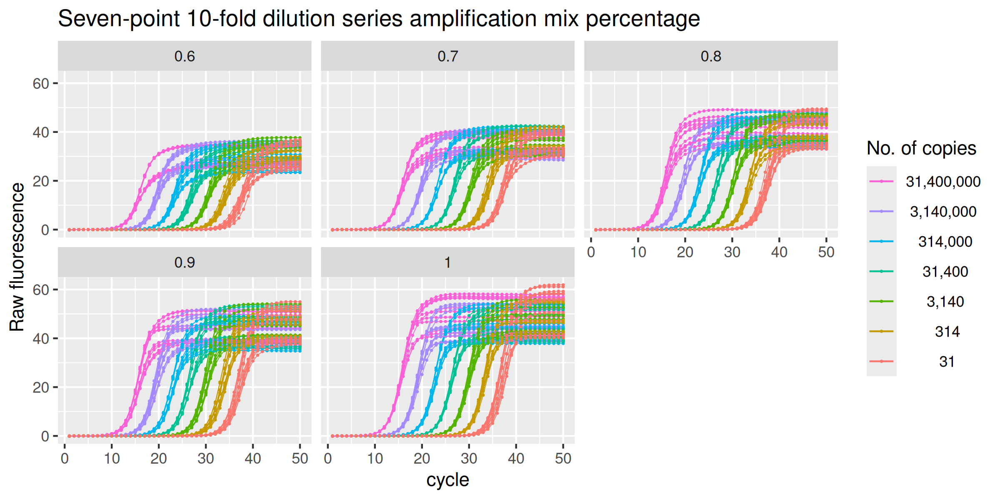
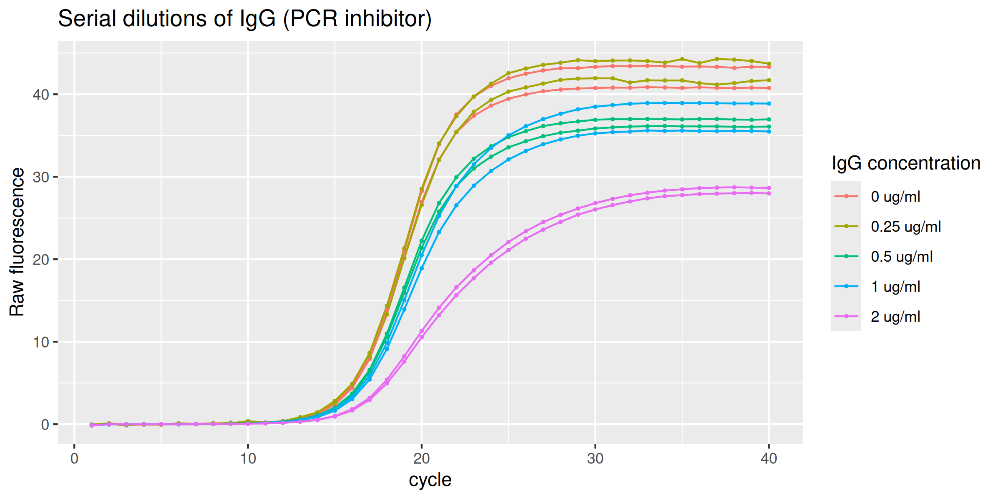

guescini is an R data package that provides real-time PCR raw fluorescence data by Guescini et al. (2008) in tidy format.
Data
Guescini et al. (2008) explored the effect of amplification inhibition on qPCR quantification. Two systems were devised to alter the amplification efficiency:
- decreasing of the amplification mix used in the reaction
- increasing of IgG (PCR inhibitor) concentration in the reaction
The raw fluorescence data associated with the decreasing of the amplification mix is provided as the data set amp_mix_perc; the data obtained with increasing concentrations of IgG is provided as IgG_inhibition.
Amplification mix percentage
The data set amp_mix_perc corresponds to a set of amplification runs where the MT-ND1 gene is amplified in reactions having the same initial amount of DNA but different amounts of SYBR Green I Master mix. A standard curve was performed over a wide range of input DNA (3.14 × 107 thru 3.14 × 101) in the presence of optimal amplification conditions (100% amplification mix), while the unknowns were run in the presence of the same starting DNA amounts but with amplification mix quantities ranging from 60% to 100%.
library(guescini)
amp_mix_perc
#> # A tibble: 21,000 × 12
#> plate well dye target sample_type run replicate amp_mix_perc copies
#> <fct> <fct> <fct> <fct> <fct> <fct> <fct> <dbl> <int>
#> 1 <NA> <NA> SYBR MT-ND1 std 1 1 1 31400000
#> 2 <NA> <NA> SYBR MT-ND1 std 1 1 1 31400000
#> 3 <NA> <NA> SYBR MT-ND1 std 1 1 1 31400000
#> 4 <NA> <NA> SYBR MT-ND1 std 1 1 1 31400000
#> 5 <NA> <NA> SYBR MT-ND1 std 1 1 1 31400000
#> 6 <NA> <NA> SYBR MT-ND1 std 1 1 1 31400000
#> 7 <NA> <NA> SYBR MT-ND1 std 1 1 1 31400000
#> 8 <NA> <NA> SYBR MT-ND1 std 1 1 1 31400000
#> 9 <NA> <NA> SYBR MT-ND1 std 1 1 1 31400000
#> 10 <NA> <NA> SYBR MT-ND1 std 1 1 1 31400000
#> # ℹ 20,990 more rows
#> # ℹ 3 more variables: dilution <int>, cycle <int>, fluor <dbl>
amp_mix_perc %>%
ggplot(mapping = aes(
x = cycle,
y = fluor,
group = interaction(run, amp_mix_perc, copies),
col = format(copies, big.mark = ",", scientific = FALSE)
)) +
geom_line(linewidth = 0.2) +
geom_point(size = 0.2) +
labs(y = "Raw fluorescence", colour = "No. of copies", title = "Seven-point 10-fold dilution series amplification mix percentage") +
guides(color = guide_legend(override.aes = list(linewidth = 0.5), reverse = TRUE)) +
facet_wrap(vars(amp_mix_perc))
Inhibition by IgG
The data set IgG_inhibition provides those runs performed in the presence of an optimal amplification reaction mix added with serial dilutions of IgG (0.0 - 2 ug/ml) thus acting as the inhibitory agent.
IgG_inhibition %>%
ggplot(mapping = aes(
x = cycle,
y = fluor,
group = interaction(IgG_conc, replicate),
col = paste(as.character(IgG_conc), "ug/ml")
)) +
geom_line(linewidth = 0.5) +
geom_point(size = 0.5) +
labs(y = "Raw fluorescence", colour = "IgG concentration", title = "Serial dilutions of IgG (PCR inhibitor)") +
guides(color = guide_legend(override.aes = list(linewidth = 0.5)))
Code of Conduct
Please note that the guescini project is released with a Contributor Code of Conduct. By contributing to this project, you agree to abide by its terms.
References
Michele Guescini, Davide Sisti, Marco BL Rocchi, Laura Stocchi and Vilberto Stocchi. A new real-time PCR method to overcome significant quantitative inaccuracy due to slight amplification inhibition. BMC Bioinformatics 9:326 (2008). doi: 10.1186/1471-2105-9-326.